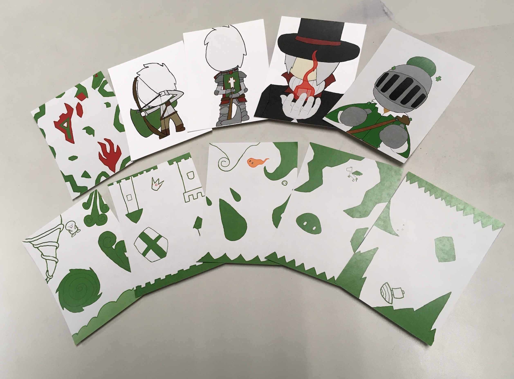
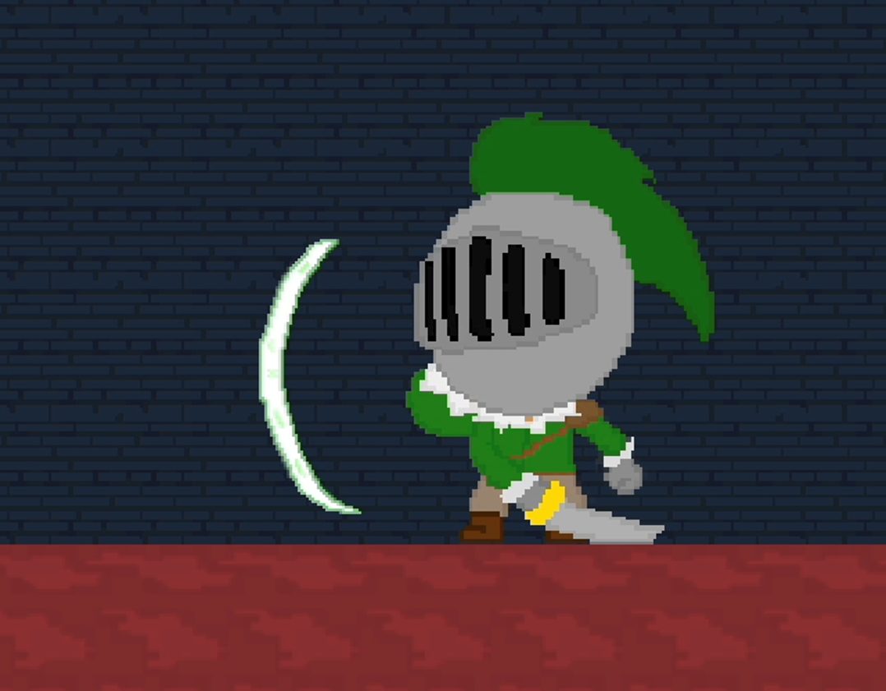

This is an Augmented Reality game that I, along with a team of 3 other students, created for one of our classes. This game uses custom made cards that are scanned by the computer camera to trigger different effects in the game. The type of game that we created for this project was a 2D platformer where the cards could change different aspects of the player to help them navigate the environment. In order to make this work I had to incorporate Vuforia, an image recognition software, into the Unity game. This allowed me to learn about how Unity can interact with outside software, and helped improve my knowledge of C# code.

The cards did a variety of things. One of which gave the player a sword as a weapon. I created the sword script inside of unity, which activated the sword hitbox when the player hit the attack button. A different card was called the "Chaos Card". This card was a random chance card where it would give the player a random effect depending on which effect was selected in the random script. There is even a .6% chance that when the card is scanned that a new enemy will constantly hunt down the player. Through the process of writing this script I was able to understand how to use the Math.random function, and allowed me to practice writing more complex scripts that require get and set methods in order to function properly without changing the main script.
I also got to work on the music for this game. I wrote the music in a software called Famitracker. This software emulates the original limitations of the NES and SNES sound cards. I decided to use this because the art style of the game was pixel based, so I wanted to mimic that simplicity with the music as well. I also decided to write the music in a minor key in order to give the atmosphere of the mansion as one of impending doom.